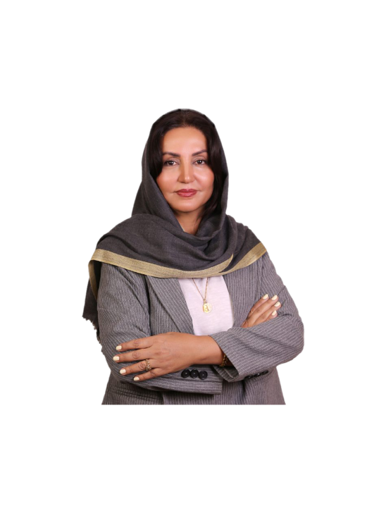

متخصص زنان و زایمان
سلامتی شما،
با دقت و هدفمند.
مراقبتهای تخصصی زنان، در محیطی صمیمی و آرام.
خوش آمدید
دکتر شیلا نورانی متخصص زنان و زایمان است و خدمات تخصصی از جمله جراحی زیبایی زنان، لابیاپلاستی، لاپاراسکوپی و هیستروسکوپی را ارائه میدهد. عضو انجمن لیزر پزشکی ایران، انجمن زنان و هیئت مدیره بیمارستان پاستور.
بیشتر دربارهی مطب بدانید